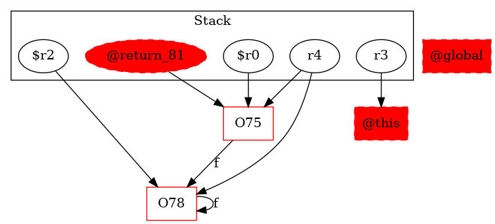

-1 : r3 := @this: Test2
75 : $r0 = new testcase.Test2
75 : specialinvoke $r0.|testcase.Test2: void |init|()|()
76 : r4 = $r0
77 : i0 = 0
77 : if i0 |= 10 goto return $r0
78 : $r2 = new testcase.Test2
78 : specialinvoke $r2.|testcase.Test2: void |init|()|()
78 : r4.|testcase.Test2: testcase.Test2 f| = $r2
79 : r4 = r4.|testcase.Test2: testcase.Test2 f|
77 : i0 = i0 + 1
77 : goto [?= (branch)]
81 : return $r0 ->class soot.jimple.internal.JReturnStmt {getOp: class soot.jimple.internal.JimpleLocal}
